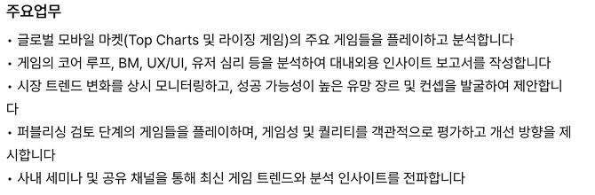
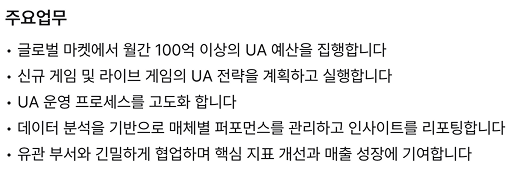
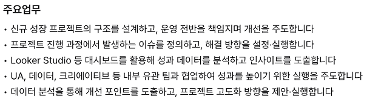
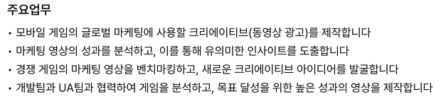
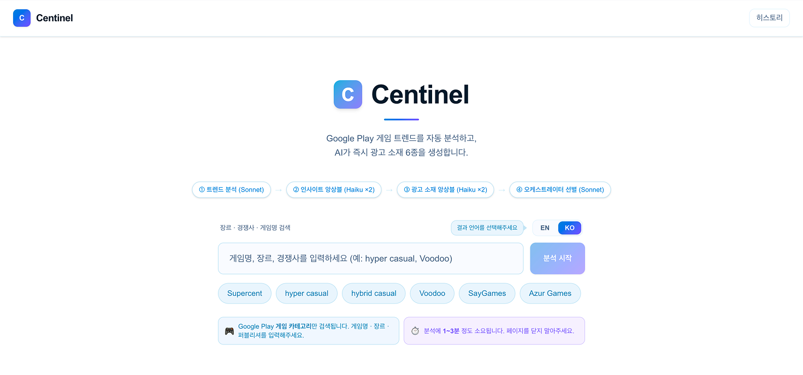
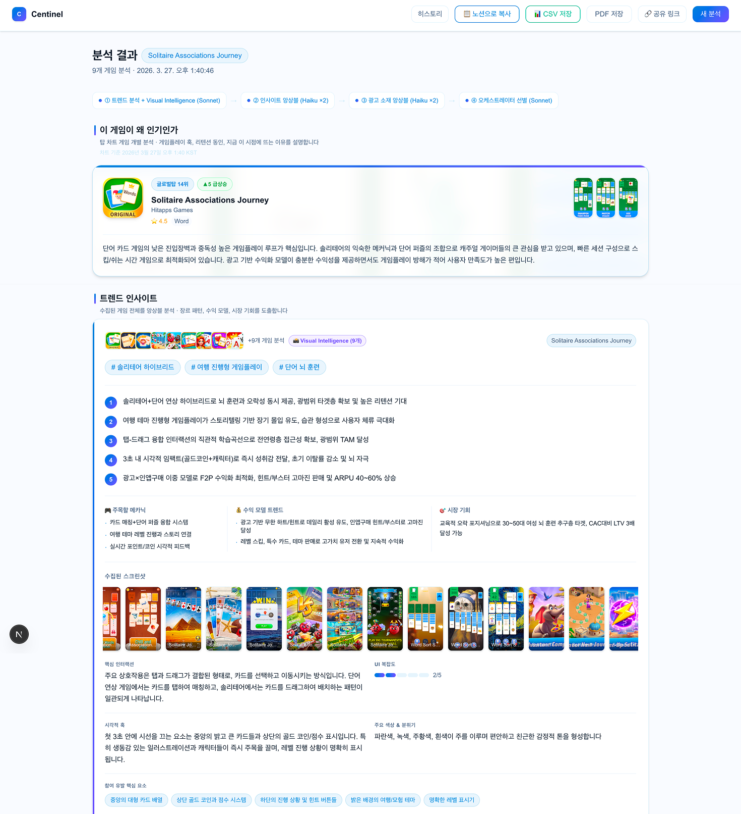
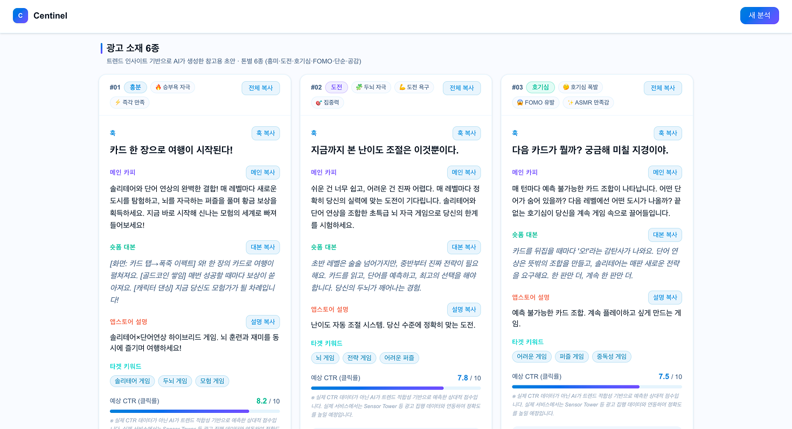
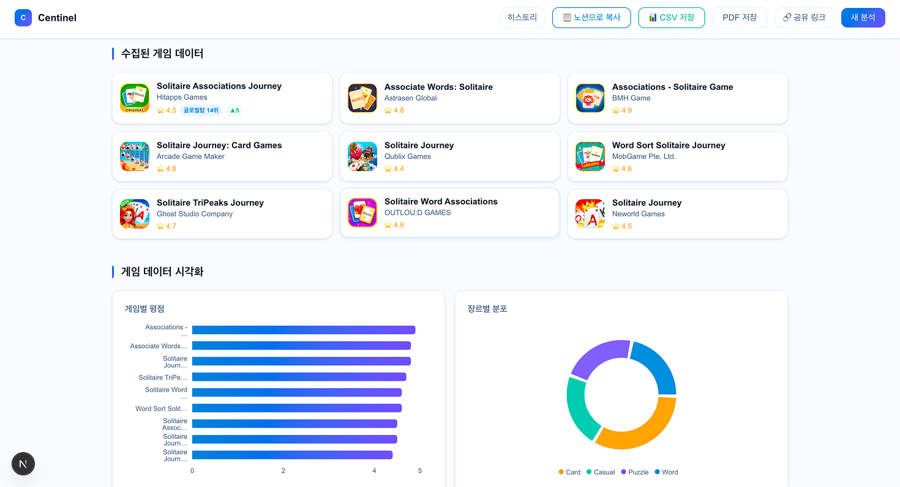
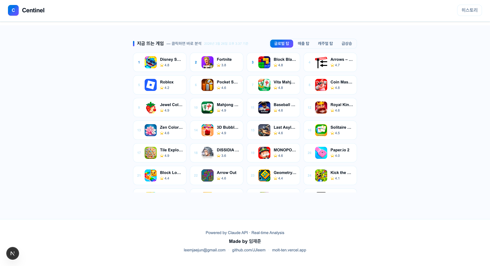
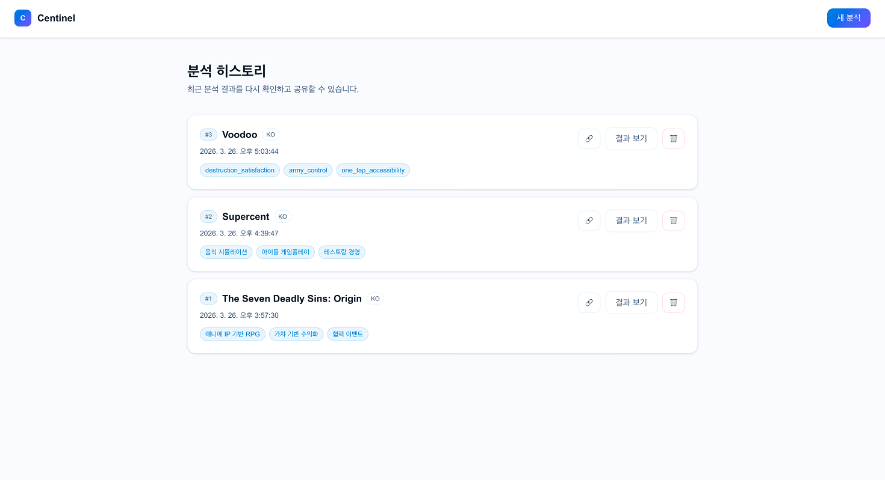

| 역할 | 모델 | 용도 |
|---|---|---|
| 트렌드 분석 / 오케스트레이터 | claude-sonnet-4-20250514 |
고품질 분석 + 최종 선별 |
| 앙상블 에이전트 ×5 | claude-haiku-4-5-20251001 |
왜인기인가(1) + 인사이트(2) + 광고소재(2) 병렬 초안 |
| Vision 멀티모달 | claude-sonnet-4-20250514 |
스크린샷 시각 분석 |
genreId GAME_ 필터링 (비게임 앱 차단)
| 프레임워크 | Next.js 16 (App Router) |
| 언어 | TypeScript strict 모드 |
| 스타일링 | Tailwind CSS v4 |
| AI API | claude-sonnet + claude-haiku |
| 데이터 | google-play-scraper (genreId 필터링) |
| 스트리밍 | Server-Sent Events (SSE) |
| 백엔드 | Next.js API Routes (서버리스) + Supabase (Postgres) |
| DB | Supabase — 차트 스냅샷 시계열 · 분석 히스토리 공유 |
| 크론 | Vercel Cron — 하루 1회 자동 차트 수집 (급상승 감지용) |
| 배포 | Vercel |
| 개발 도구 | Claude Code |
genreId.startsWith('GAME') 필터로 비게임 앱 차단.
insufficient_results 에러 반환 + 추천 검색어 칩 표시.





/result/[uuid] 로 팀원 누구나 결과 확인 가능
